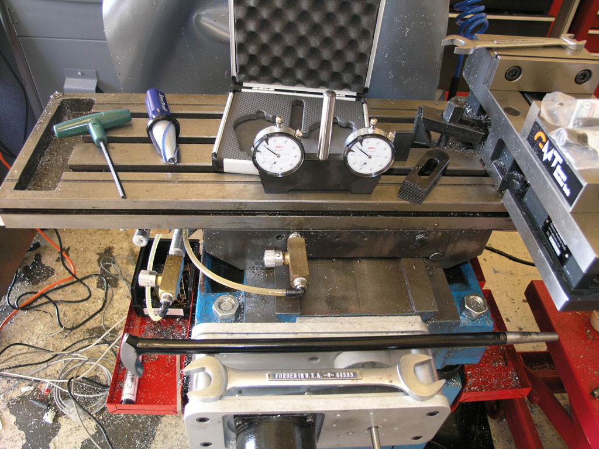
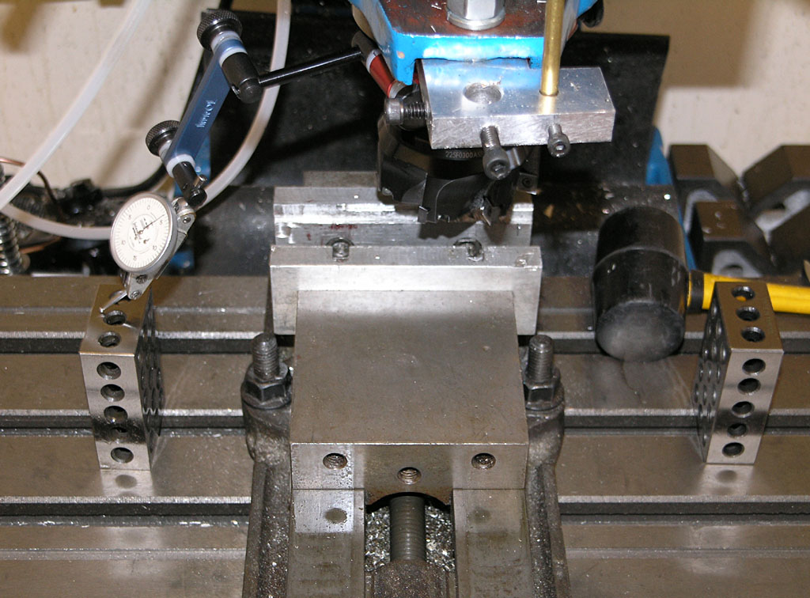
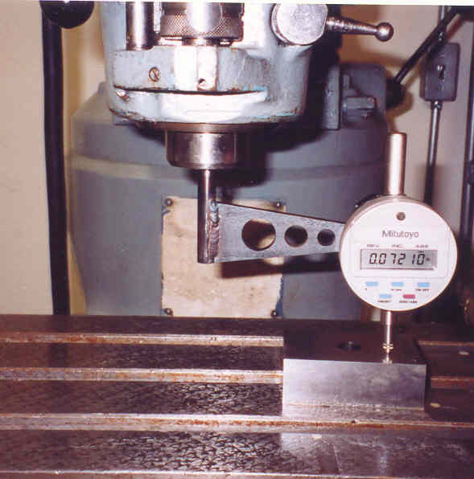
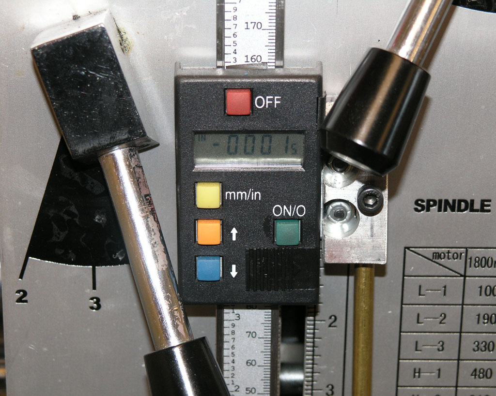
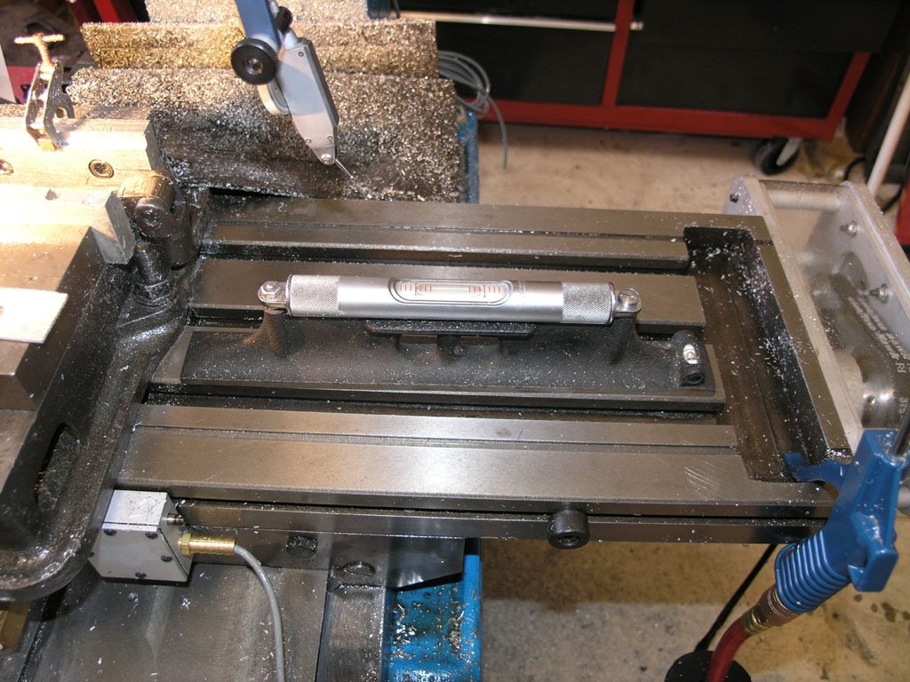
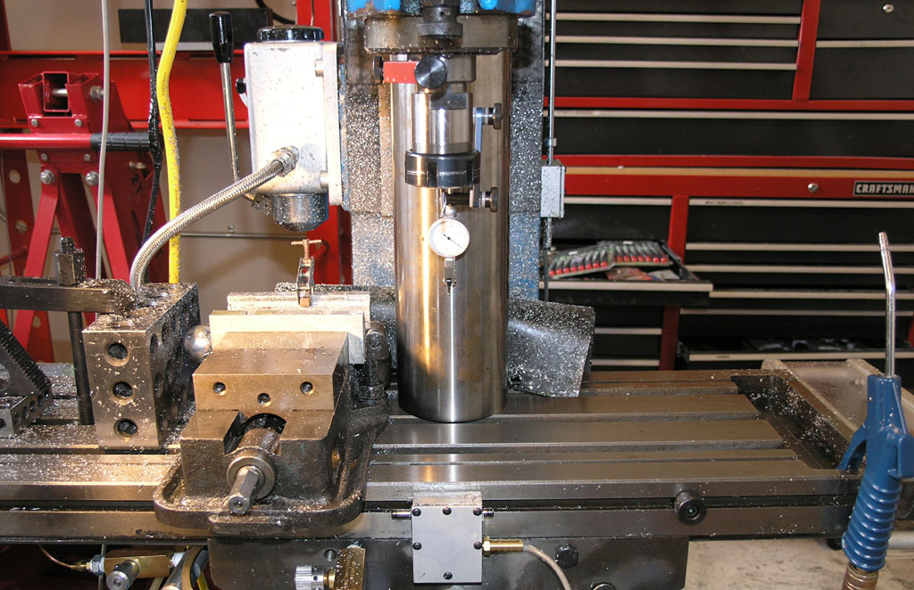
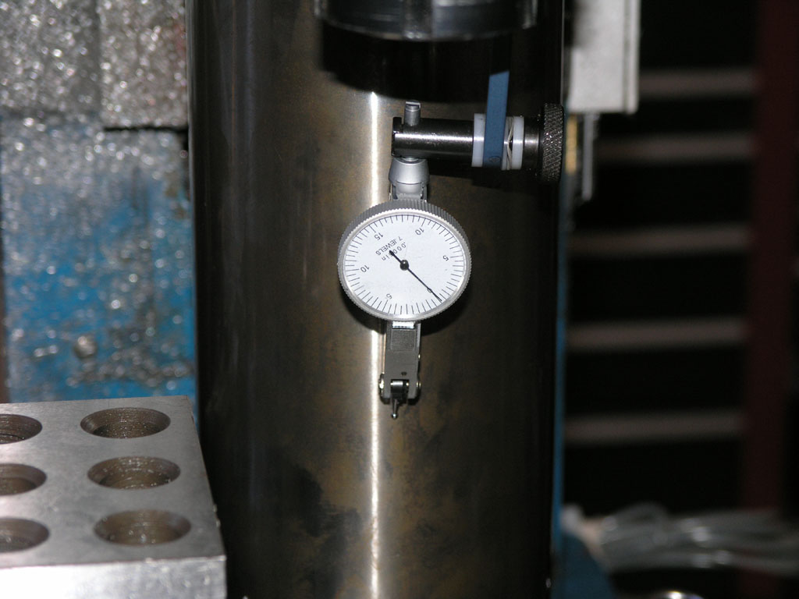
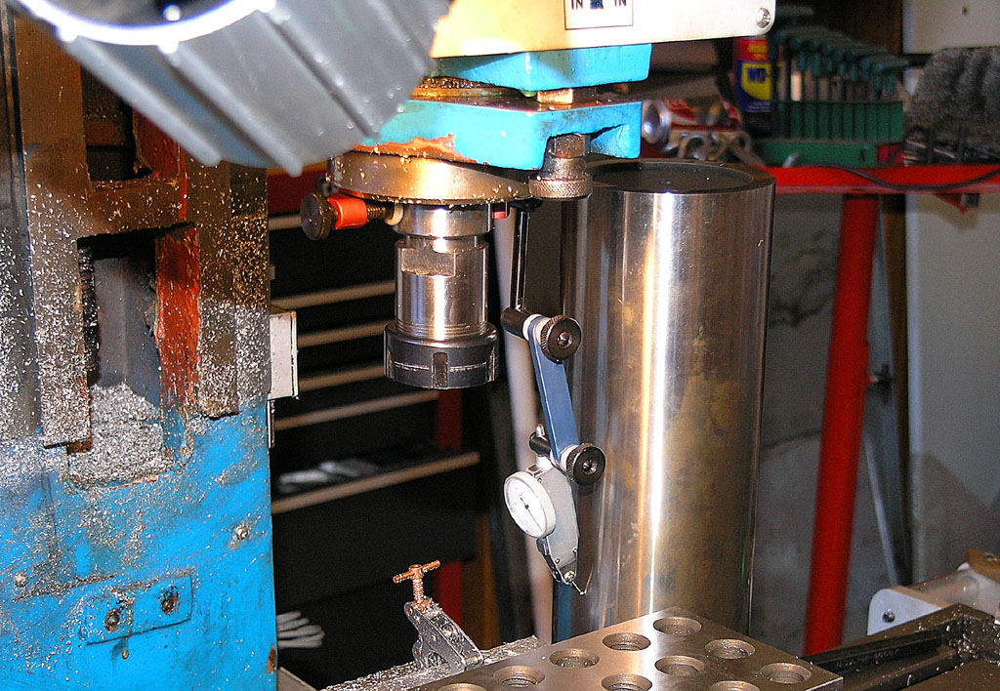
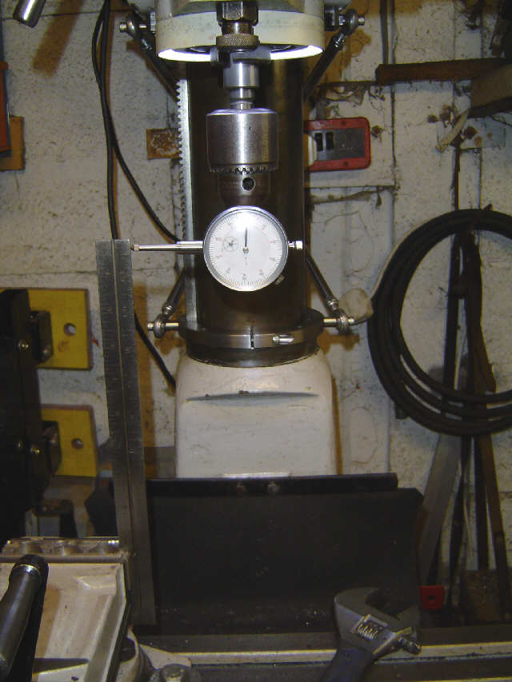

Tram is the squareness of your
mill head to the table. There is tram parallel to the x-axis, and tram
parallel to the y-axis (sometimes called "nod"). Depending on
your machine, you may have a swivel head that is designed to cut at angles
other than square for more flexibility. For machines with adjustable heads,
you need to check the tram fairly often and rest it.
I try to check the tram on
my mill whenever I begin a new project. That's really not often enough.
Most machinists who work in shops where anyone might use any machine check tram when they come in every morning,
and quite a few will also check if someone else uses the machine during
the day. The point is, if you need accurate cuts and the best finishes,
your mill needs to be in tram.
Tubal Cain Tramming His Bridgeport Knee Mill
Tubal Cain has a number of good manual machining videos on YouTube...
Those videos are taken from his CNCZone G0704 series as he converts a Grizzly G0704 to CNC. If you haven’t come across Hoss before, he is a must-read. His G0704 thread is great, but still in progress–he has CNC’d and added a belt drive conversion to the spindle, but he is still in the middle of his power drawbar and eventually a toolchanger.
Tramming the Mill With a Traminator
Tramming is an important and frequent task for any mill whose head will swivel. Each time I check tram on my Industrial Hobbies RF-45 style mill it always needs a little tweak. These mills can be a little bit twitchy to tram because the head is very heavy, wants to "nod" forward as you loosen the tramming lock bolts, and once loose, it is hard to move just a little bit. As you tighten back up, it will typically move a little as well. Since it is hard to move, I have typically used a prybar stuck in one of the holes to gain a little leverage from which to tap the head gently into tram. I use an SPI "traminator" double indicator tool to measure the tram:

Wrench, prybar, and "Traminator" gauge...
It's not hard to tram the mill this way, but it certainly doesn't seem a very precision approach and can be a bit trial and error. At least I can see clearly what's going on with both indicators. These indicators are relative reading. Set the thing down on the table and turn the dials to zero the indicators. Stick it in the spindle. You mission is to get the needles back to the zeroed position by tapping the head one way or the other.
Screw adjustment makes it easier to precisely move RF-45 spindle head to achieve tram...
Tramming the Mill More Quickly With Your Quill DRO
At some point, I developed
a procedure that I find easier and faster on my manual mill. This was before I got the Traminator, and I quit doing things this way once I had one. But, for those without a Traminator, here is my basic setup with
the DTI on my Indicol and a couple of 1-2-3 blocks to provide clearance
over the vise:

Basic tramming
setup...
The goal is to
have the DTI have the same reading on either side, indicating the spindle
is square with respect to the table. The Indicol is not the best tramming
setup, BTW. A proper tramming bar would be more rigid and less "jumpy".
For example:

Here's a nice
tramming bar that goes in a collet...
I decided to try using my quill DRO and the DTI like a sensitive height
gage. I would raise the DTI off the 1-2-3 block on one side, lower the
quill until I saw DTI motion, and press the zero on the quill DRO. Then
I raise up off the block, flip it around to the other block, and lower
down until the DTI registers. Now I can read on the quill DRO the difference
between the two sides. Next I bump the head in until the Quill DRO/"Height
Gage" reading is 1/2 what it started out. Repeat the procedure until
you're within acceptible limits. I was able to get pretty close in 2 cycles
of this:

Head is now
trammed within 0.001" on about a 10-12" circle. That's pretty
close!
Most people have heard of
Tramming a mill, but what about squaring? Tramming generally refers
to alignment along the axes that are designed to move if the head can
be swiveled on the mill. Squaring involves taking the mill apart to really
get things lined up. It's done once in a blue moon, such as when you first
get the mill or if your mill doesn't seem to be cutting accurately even
after tramming in.
Shim the Column or the
Base?
One sure way to ignite a controversy
is to bring up the topic of leveling as it relates to out of square lathes
and mills. There is a school that says you level the lathe's bed and the
rest is a function of the machine itself. There is another school that
wants to use level as "close to correct" and then run a test
bar with further adjustment of the leveling until the lathe cuts without
taper. The first school sees this as adding a twist to the bed and is
horrified. The second school sees it as a practical solution to a problem
and wonders whether the first school realizes that.
Recently the same sort of argument
broke out around milling machines, specifically the Tormach. It's
an interesting thread, with both sides weighing in. Philbur addresses
the purest camp clearly with this remark:
I think that shimming
the bed must be the last resort, not the first, for correcting a tram
error. Tramming the table tells you that the spindle is not perpendicular
to the table surface (assuming the surface is flat!), it doesn't tell
you why. The column may not be square to the table, or the spindle may
not be square to the column, or both. Twisting the bed will most probably
mask one error by introducing a second error. The correct method is to
identify each error individually and correct it without influencing any
other alignments.
OTOH, no less an authority
than Tormach's Greg Jackson himself says to shim the base instead of the
column:
When working to optimize
the left/right tram, shimming the front left or right feet under the
base is always the first thing to do. The natural assumption is that
the stand should be flat and rigid, then you put the machine on it and
everything is perfect. The reality of the world is that everything is
flexible, even those things that appear rigid. The stand is less rigid
than the base of the mill itself and when the 1100 lb mill is placed
on the stand, the stand moves a few thousandths of an inch in reaction
to the weight of the mill.
Machine geometry can seem
straightforward, but it becomes complex when you start to understand
the fine details. If you take a perfect machine an put it on a stand
which flexes in a non linear fashion under the weight of the machine,
then there will be some left/right tram error due to a small twist force
on the base. Countering that twist force by shimming the base/column
connection point is possible but shimming between the base/stand is
easier and probably a more accurate way to correct.
The iron base of the mill
goes through both a heat soak stress relief and a vibration stress relief
process so residual stresses are unlikely. The stand is a welded fabrication
and will always have some residual internal stresses. If some alignment
issues show up over time it could be the result of a crash, motion in
the iron, or motion in the steel stand. We believe the stand is the
most likely source. In the actual manufacturing process each machine
base is checked on a large surface plate before the machine is assembled.
Assembly and test is not done on a surface plate, but the rather on
a three point stance. Instead of sitting on the four corners of the
iron base, the machine rests on the back two corners and a round bar
in the center front. Since three points determine a plane, this approach
ensures that there are no stresses introduced in the machine base during
the final test.
I'm with Jackson on this one
from a practical standpoint, although he has sent me correspondence claiming
that all problems with out of squareness can be traced to a stand that
is not level, something I don't agree with. It may be that the base is
fine and the column could be shimmed, but if you can do it from the base,
that seems an easier/better approach. If nothing else, try it that way
first and take some measurements with your DTI to see how close you're
coming.
Also note that for this to
work out well, you can't bolt the machine to the stand. What you're doing
is using leveling feet on the base to jack one corner or another, so the
base has to be able to rise and fall relative to the stand.
Squaring the Column on
my IH Mill
Before I attempted to square
my mill, I leveled the machine to the table. I measured my squareness
before and after leveling and the difference was substantial. So substantial
that you can probably get perfectly square just by tweaking the leveling
feet of you mill (perhaps out of actual level but until your machine is
square), just like with a lathe and just as Tormach's Greg Jackson says.

Before attempting
to square the column, be sure to level the table!
The easy way to check squareness
is with a dial test indicator in the spindle, and a cylindrical square
on the table. You need to measure 2 planes corresponding to X and Y, so
I positioned the cylindrical square twice:

Cylindrical
square is inline to measure whether the column "nods" forward
or backwards from vertical. The indicator should stay put as the head
jogs up and down...

I started at
the top and went down 8". The need barely moved a tenth!

Now we rotate
90 degrees and we're going to check whether the column leans left or right
by moving the head up and down and checking against the square...
I was out about
1 thou left to right and nearly 3 thou of "nod" forward. This
was easily fixed with a little shim stock. Having squared the head, I
went on to tram it as well.

An alternative
if you don't have a cylindrical square...
QA Tests for a Mill
Tormach's inspection
sheet shows some excellent tests you can make on your mill to determine
its squareness and accuracy.